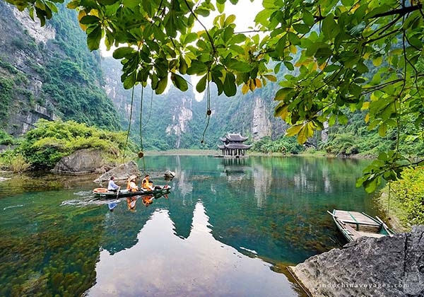
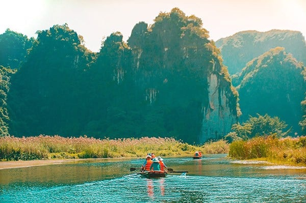

1. Giới thiệu tổng quan về khu du lịch sinh thái Tràng An
*Khu sinh thái Tràng An thuộc khu quần thể danh thắng Tràng An (tỉnh Ninh Bình) – nơi đây cách thành phố Hà Nội khoảng 100km. Quần thể này là di sản “kép” của nước ta được UNESCO công nhận là liên khu danh thắng có sở hữu cảnh sắc núi non tuyệt đẹp, hữu tình và luôn mang đến những món ngon cùng đặc sản hấp dẫn dành tặng du khách.
Quần thể du lịch tại Tràng An đều được hình thành hoàn toàn tự nhiên và hấp dẫn được đông đảo du khách bởi cảnh sắc tuyệt đẹp – hữu tình như: Tam Cốc – Bích Động – cố đô Hoa Lư – trừng đặc dụng Hoa Lư – liên khu danh thắng Tràng An.

2. Khu du lịch sinh thái Tràng An ở đâu?
Tràng An là một trong những di sản “kéo” duy nhất nước ta được UNESCO công nhận, nằm trên địa phận thành phố Ninh Bình và 3 huyện Hoa Lư, Nho Quan, Gia Viên. Quần thể di sản ba gồm liên khu danh thắng Tràng An – Tam Cốc – Bích Động – cố đô Hoa Lư – rừng đặc dụng Hoa Lư.
Trong quần thể rộng lớn ấy, cố đô Hoa Lư sẽ nằm ở phía Bắc, Tam Cốc – Bích Động tọa lạc ở phía Nam còn khu du lịch Tràng An sẽ nằm ở giữa, vị trí trung tâm. Khu du lịch chỉ cách Hà Nội chưa đầy 100km, cách thành phố Ninh Bình khoảng 7km. Chính vì vậy mà nơi đây đã được đông đảo du khách lựa chọn làm điểm dừng chân nghỉ dưỡng vào cuối tuần hoặc những dịp
3. Giới thiệu về khu du lịch sinh thái Tràng An Ninh Bình
Tràng An là một vùng non nước, phong cảnh thiên nhiên hữu tình và mây trời hòa quyện. Với diện tích trải rộng lên đến hơn 2000ha, quần thể danh lam thắng cảnh Tràng An được tạo nên từ những dãy núi đá vôi hùng vĩ, các hang động kỳ ảo, cùng những thung lũng, sông hồ trùng điệp. Bên cạnh đó, những di sản văn hóa lâu đời cũng xuất hiện tại đây như đền thờ, chùa chiền, kết hợp với cảnh sắc thiên nhiên độc đáo tạo nên một không gian đẹp nên thơ, huyền ảo, trữ tình

Dòng nước nơi đây xanh ngát, soi bóng những vách núi đá trùng điệp. Khu du lịch có tới 31 hồ, đầm nước được nối thông nhau bởi 48 hang động. Trong đó có những hang xuyên thủy dài đến 2km như hang Địa, hang Mây, hang Sinh Dược. Mỗi hang đều mang một vẻ đẹp riêng, bên trong có nhiều nhũ đá biến đổi, tạo nên một bức tranh sinh động, “độc nhất vô nhị” ở vùng đồng bằng Bắc Bộ